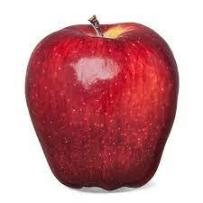
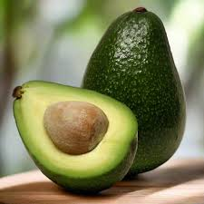
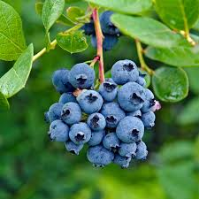
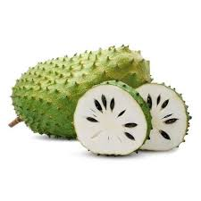
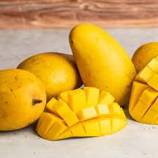
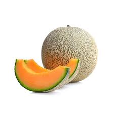
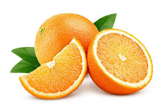
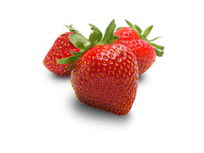

| My Fruits | |||
|---|---|---|---|
| Image | Name | Description | Facts |
 |
Apple | Color Red or Green | Apples are rich in fiber, vitamins, and antioxidants. They are one of the most widely cultivated tree fruits. |
 |
Apple Mango | Color Reddish-Yellow | This is a specific variety of mango known for its reddish skin that resembles an apple, and it has a notably sweet, rich flavor. |
 |
Avocado | Color Dark Green or Black | Technically a large berry with a single seed, avocados are unique because they are high in healthy monounsaturated fats rather than carbohydrates. |
 |
Blueberry | Color Deep Blue or Purple | Blueberries are often considered a superfood due to their extremely high levels of antioxidants, particularly anthocyanins. |
 |
Guyabano | Color Green with a spiky exterior | Also known as soursop, it has a creamy texture and a flavor profile often described as a mix of strawberry and pineapple. |
 |
Mango | Color Yellow, Orange, or Red | Known as the 'king of fruits,' mangos are rich in beta-carotene and help support eye health. |
 |
Melon | Color Green or Orange | Melons have a very high water content (often around 90%), making them incredibly hydrating. |
 |
Orange | Color Orange | Oranges are a premier source of Vitamin C and also contain good amounts of fiber and potassium. |
 |
Pineapple | Color Yellow with a Brown rind | Pineapples contain bromelain, a group of digestive enzymes that can help break down proteins and aid digestion. |
 |
Strawberry | Color Red | Strawberries are the only fruit that wear their seeds on the outside, with an average strawberry containing about 200 seeds. |